Contact me: reymonr@unklab.ac.id
Node.js is an environment that can run JavaScript code outside of a web browser. Gatsby is built with Node.js. To get up and running with Gatsby, you'll need to have a recent version installed on your computer.
Note: Gatsby's minimum supported Node.js version is Node 8, but feel free to use a more recent version.
The instruction below is for Mac system:
brew update to make sure you have the latest version of Homebrew.brew install nodeFor Windows users, download Node.js installer and follow the instructions.
Once you have followed the installation steps, make sure everything was installed properly:
Check your Node.js installation
node --version to check the node version and npm --version to check the npm version. Below is the example output: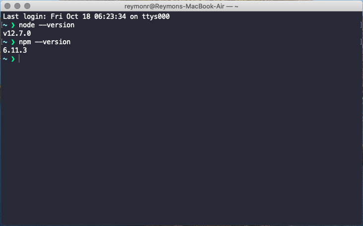
Install Git
You can use Git for Windows stand-alone installer. Below is the step by step:
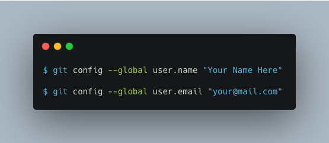
To use Gatsby we need to install the Gatsby CLI. The Gatsby CLI tool lets you quickly create new Gatsby-powered sites and run commands for developing Gatsby sites. It is a published npm package.
The Gatsby CLI is availabile via npm and should be installed globally by running npm install -g gatsby-cli. Below is the output of installation:
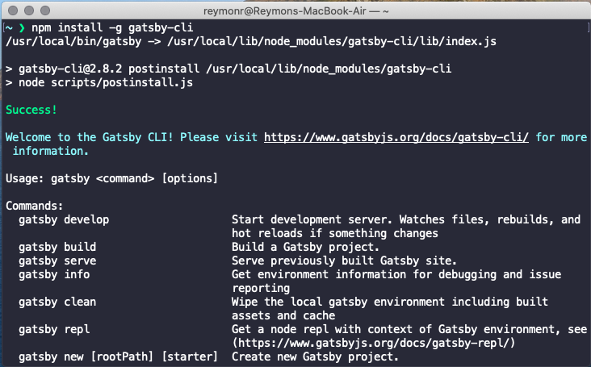
Create New Gatsby Site
Now you are ready to use the Gatsby CLI tool to create your first Gatsby Site. Using the tool, you can download "starters" (partially built sites with some default configuration) to help you get moving faster on creating a certain type of site. You can also create an empty Gatsby site (this what we will do).
To create a Gatsby site enter the following command:
gatsby new myblog
Below is the example output:
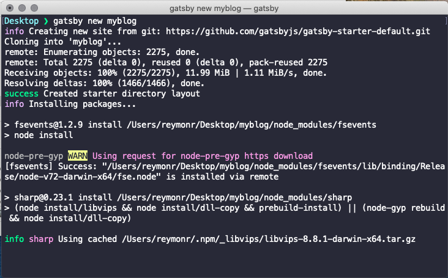
After the site is created, open it with a Text Editor. Here i'm using Microsoft VSCode text editor.
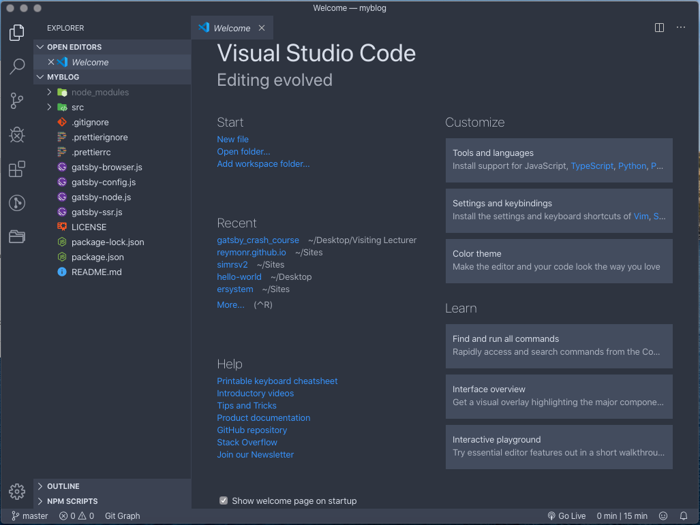
To view your site locally, simply run the following code:
gatsby develop
it will run the development server and you can open a new tab in your browser and navigate to http://localhost:8000/. Below is the example output:
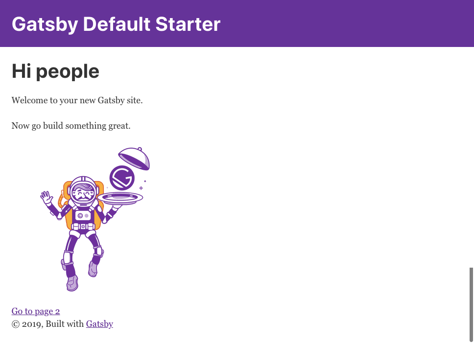
Next, lets create a static page on our site. We will add two static pages, the About page and Services page.
Add About Page
src/pages/ folder and named it about.js.about.js file.import React from "react"
import Layout from "../components/layout"
import SEO from "../components/seo"
const AboutPage = () => (
<Layout>
<SEO title="About Us" />
<h1>About Us</h1>
<p>We are Web Developers.</p>
</Layout>
)
export default AboutPagehttp://localhost:8000/about. If it success, you will see the following result: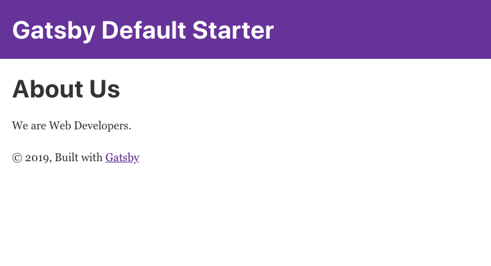
Next. It's your turn to create the Services page using the same steps explained before.
We will create a Menu Component. Follow the steps below to create a component:
src/components/ folder and name it menu.js.menu.js file and type the following code:import React from 'react'
import { Link } from "gatsby"
const Menu = () => (
<div style={{
background: '#f4f4f4',
paddingTop: '10px'
}}>
<ul style={{
listStyle: 'none',
display: 'flex',
justifyContent: 'space-evenly'
}}>
<li><Link to="/">Home</Link></li>
<li><Link to="/about">About</Link></li>
<li><Link to="/services">Services</Link></li>
<li><Link to="/blog">Blog</Link></li>
</ul>
</div>
)
export default Menusrc/components/layout.js file. Add the menu component we just created. To add the component to the layout file, type these two lines of code, import Menu from "./menu" (line no 13) and <Menu /> (line no 30). The complete code of layout.js file:/**
* Layout component that queries for data
* with Gatsby's useStaticQuery component
*
* See: https://www.gatsbyjs.org/docs/use-static-query/
*/
import React from "react"
import PropTypes from "prop-types"
import { useStaticQuery, graphql } from "gatsby"
import Header from "./header"
import Menu from "./menu"
import "./layout.css"
const Layout = ({ children }) => {
const data = useStaticQuery(graphql`
query SiteTitleQuery {
site {
siteMetadata {
title
}
}
}
`)
return (
<>
<Header siteTitle={data.site.siteMetadata.title} />
<Menu />
<div
style={{
margin: `0 auto`,
maxWidth: 960,
padding: `0px 1.0875rem 1.45rem`,
paddingTop: 0,
}}
>
<main>{children}</main>
<footer>
© {new Date().getFullYear()}, Built with
{` `}
<a href="https://www.gatsbyjs.org">Gatsby</a>
</footer>
</div>
</>
)
}
Layout.propTypes = {
children: PropTypes.node.isRequired,
}
export default LayoutAfter adding the Menu component to the layout.js file, you can see a menu shown below the Header component.
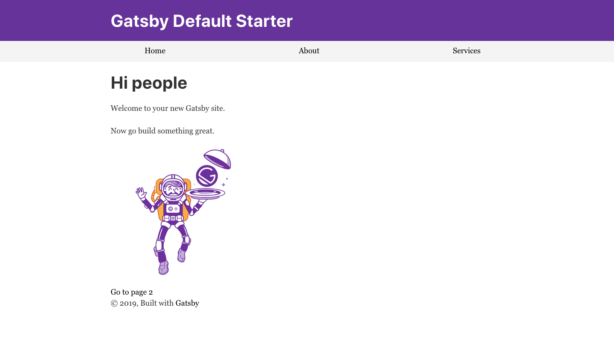
Using the Menu component, you can navigate to Home page, About page, and Services page.
To create a blog post, we will use the Markdown syntax. Markdown is a lightweight markup language with plain text formatting syntax. In order the blog post can be write using Markdown syntax, there are some installation and configuration needed. Below is the step by step.
There are three plugins need to install, write the command below to install the plugins.
$ npm install gatsby-source-filesystem
$ npm install gatsby-transformer-remark
$ npm install gatsby-plugin-catch-links
You can write the installation command in one line like below:
npm install gatsby-source-filesystem gatsby-transformer-remark gatsby-plugin-catch-links
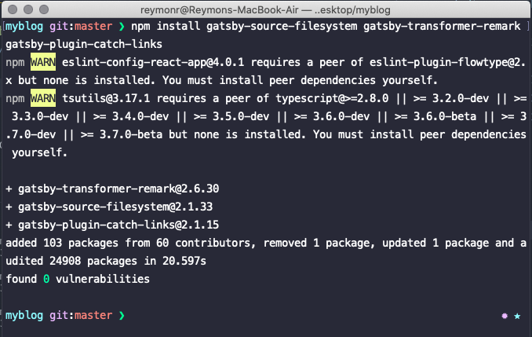
To configure the plugins, open the file gatsby-config.js, and add the plugins we just installed. To add plugins in the configuration file, type the following code after gatsby-plugin-sharp configuration (line no 29):
`gatsby-plugin-catch-links`,
{
resolve: `gatsby-source-filesystem`,
options: {
path: `${__dirname}/src/pages`,
name: `pages`
}
},
`gatsby-transformer-remark`,The final code of your gatsby-config.js file will look like this:
module.exports = {
siteMetadata: {
title: `Gatsby Default Starter`,
description: `Kick off your next, great Gatsby project with this default starter. This barebones starter ships with the main Gatsby configuration files you might need.`,
author: `@gatsbyjs`,
},
plugins: [
`gatsby-plugin-react-helmet`,
{
resolve: `gatsby-source-filesystem`,
options: {
name: `images`,
path: `${__dirname}/src/images`,
},
},
`gatsby-transformer-sharp`,
`gatsby-plugin-sharp`,
{
resolve: `gatsby-plugin-manifest`,
options: {
name: `gatsby-starter-default`,
short_name: `starter`,
start_url: `/`,
background_color: `#663399`,
theme_color: `#663399`,
display: `minimal-ui`,
icon: `src/images/gatsby-icon.png`, // This path is relative to the root of the site.
},
},
`gatsby-plugin-catch-links`,
{
resolve: `gatsby-source-filesystem`,
options: {
path: `${__dirname}/src/pages`,
name: `pages`
}
},
`gatsby-transformer-remark`,
// this (optional) plugin enables Progressive Web App + Offline functionality
// To learn more, visit: https://gatsby.dev/offline
// `gatsby-plugin-offline`,
],
}
Note: the configuration code start from line no 30 down to 38.
Follow the steps below to create a blog page using Markdown syntax.
Markdown Blog PostCreate a folder inside src/pages. Use the following format to name the new folder: date-post-title. Example:
2019-10-18-post-one
Inside the 2019-10-18-post-one folder, create a file name it: index.md. Your project folder should look like this:
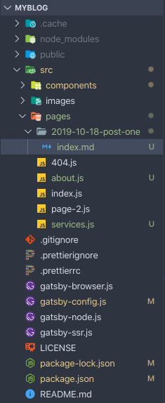
Open the index.md file, and write the following code:
---
path: "/post-one"
date: "2019-10-18"
title: "My First Blog Post"
author: "John Doe"
---
Hi there, welcome to my GatsbyJS blog. This is my first post.Next we create a page to show the blog post. Start with create a new file in the src/pages folder and name it blog.js. Write the following code to blog.js file:
import React from "react"
import { Link } from "gatsby"
import Layout from "../components/layout"
import SEO from "../components/seo"
const BlogPage = ({ data }) => (
<Layout>
<SEO title="Blog" />
<h1>Latest Posts</h1>
{data.allMarkdownRemark.edges.map(post => (
<div key={post.node.id}>
<h3>{post.node.frontmatter.title}</h3>
<small>
Posted by {post.node.frontmatter.author} on{" "}
{post.node.frontmatter.date}
</small>
<br />
<br />
<Link to={post.node.frontmatter.path}>Read More</Link>
<br />
<br />
<hr />
</div>
))}
</Layout>
)
// query using graphql to get blog posts
export const pageQuery = graphql`
query BlogIndexQuery {
allMarkdownRemark {
edges {
node {
id
frontmatter {
path
title
date
author
}
}
}
}
}
`
export default BlogPageTo view the Blog page, edit the menu.js component file add a link to the blog page.
<li> <Link to="/">Home</Link> </li>
<li> <Link to="/about">About</Link> </li>
<li> <Link to="/services">Services</Link> </li>
<li> <Link to="/blog">Blog</Link> </li>If everything is correct, you can see the Blog page and the blog post.
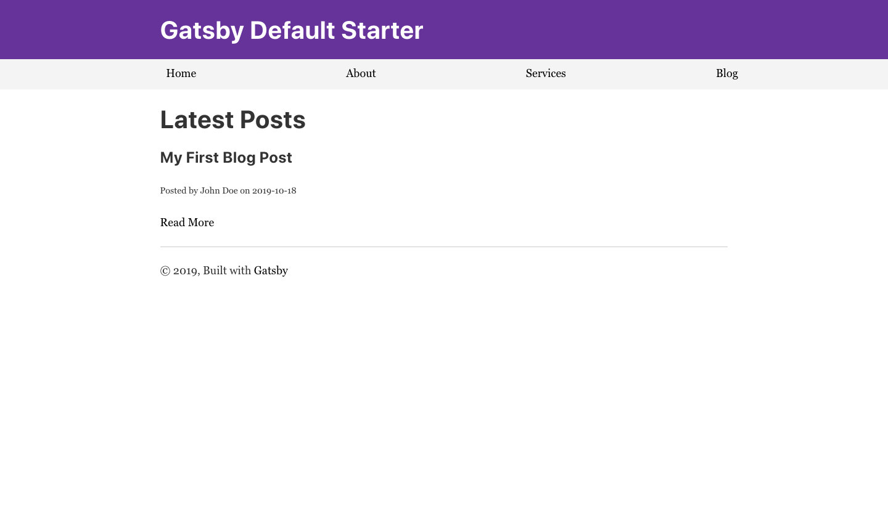
You can add another blog post by following the instruction in Section 5.3.1.
Note for now if you click the Read More link you will get an error, because we still not configure the gatsby-node.js file. We will do it later in Section 5.5.
The blog template is use for displaying a single blog post. To create a template, follow the instruction below:
templates inside the src/ folder.src/templates/, name it blog-post.js. Write the following code in blog-post.js template file.import React from "react"
import { Link } from "gatsby"
import Layout from "../components/layout"
import SEO from "../components/seo"
export default function Template({ data }) {
const post = data.markdownRemark
return (
<Layout>
<SEO title="Blog Post" />
<div>
<Link to="/blog">Go Back</Link>
<hr />
<h1>{post.frontmatter.title}</h1>
<h4>
Posted by {post.frontmatter.author} on {post.frontmatter.date}
</h4>
<div dangerouslySetInnerHTML={{ __html: post.html }} />
</div>
</Layout>
)
}
// query to get a single post detail using graphql
export const postQuery = graphql`
query BlogPostByPath($path: String!) {
markdownRemark(frontmatter: { path: { eq: $path } }) {
html
frontmatter {
path
title
author
date
}
}
}
`gatsby-node.js fileWe need to edit the gatsby-node.js file to do mapping for the blog post path. Open the gatsby-node.js file and write the following code:
const path = require("path")
exports.createPages = ({ actions, graphql }) => {
const { createPage } = actions
const postTemplate = path.resolve("src/templates/blog-post.js")
return graphql(`
{
allMarkdownRemark {
edges {
node {
html
id
frontmatter {
path
title
date
author
}
}
}
}
}
`).then(res => {
if (res.errors) {
return Promise.reject(res.errors)
}
res.data.allMarkdownRemark.edges.forEach(({ node }) => {
createPage({
path: node.frontmatter.path,
component: postTemplate,
})
})
})
}If everything is correct, you can access the blog post page by clicking the Read More link. The result will look like this:
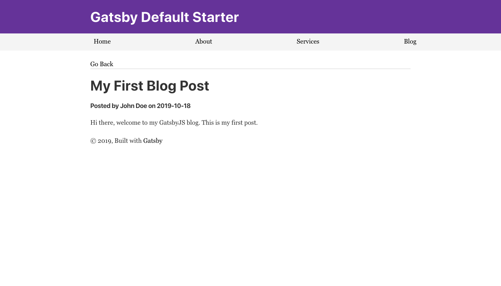
Note: you may need to restart the development server.
We will push our blog to GitHub before deploying it to Netlify. Follow the instructions below to push your website to GitHub.
Navigate to GitHub and create an account (if you already have one, sign in to your account). To create an account, fill in the following form:
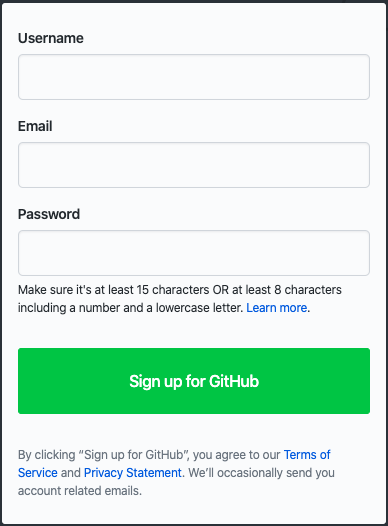
Note don't forget to activate your account via link sent to your email.
After your account created, sign in and create a new repository. To create a new repository, click the + icon on the right corner.
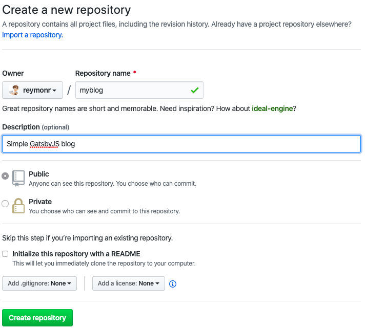
After your repository is created, you will see this page.
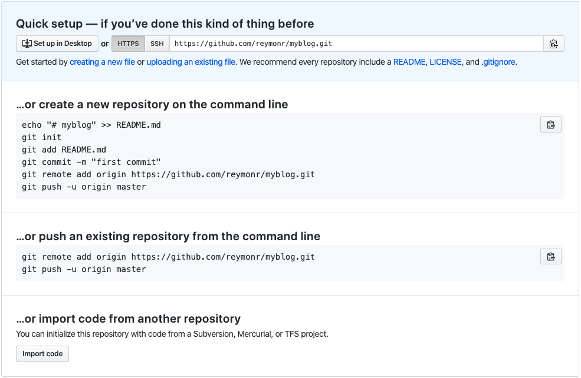
Next, open your terminal and navigate to the project folder. Add all your files in the project folder by typing the following command:
git init .
Commit all your changes by typing this command:
git init -m 'Your messages goes here'
Add a remote repository by typing the following command:
git remote add origin https://github.com/reymonr/myblog.git
And push all your files to GitHub by typing the following command:
git push -u origin master
After your files has been pushed, you can see all the files on your online repository at GitHub.
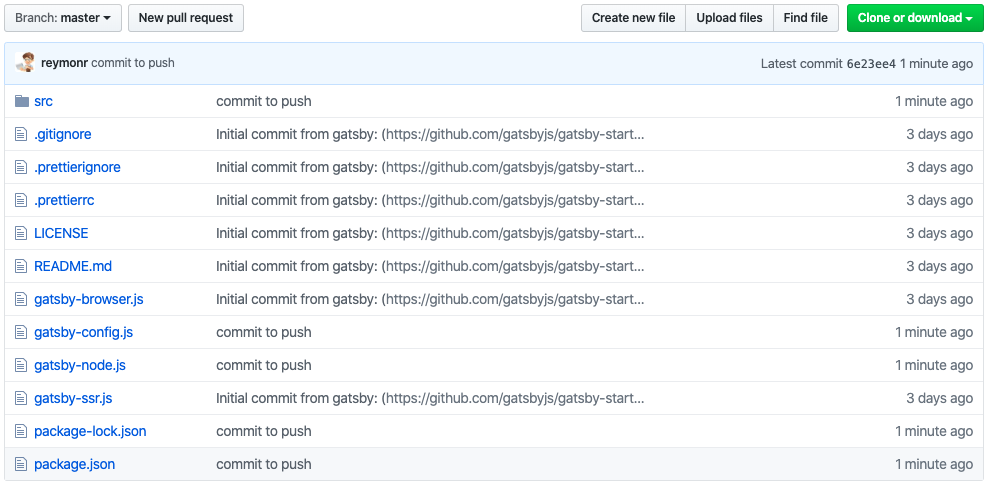
Open Netlify website in your browser.
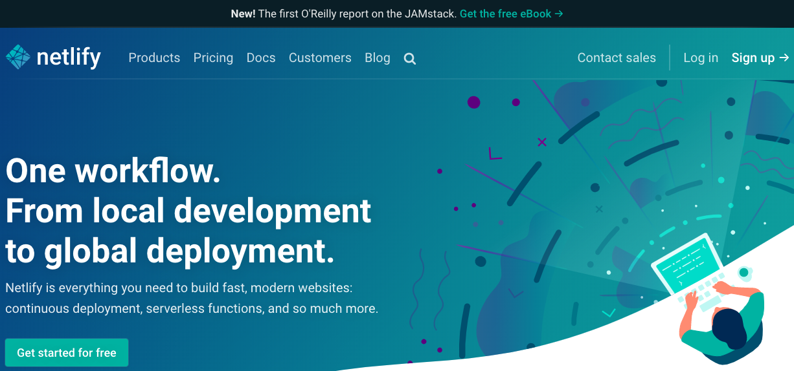
Click the button to deploy your website.
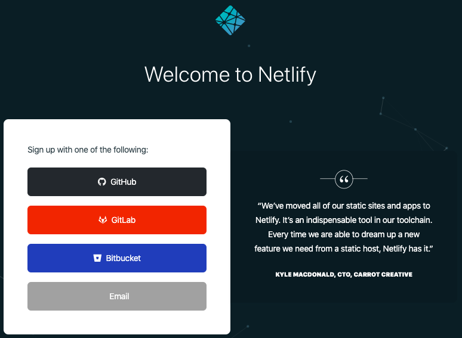
Grant connection/authentication to your GitHub account for Netlify.
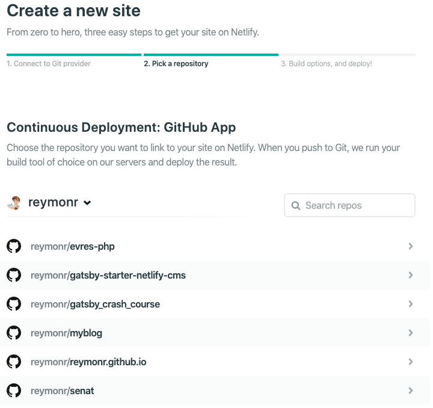
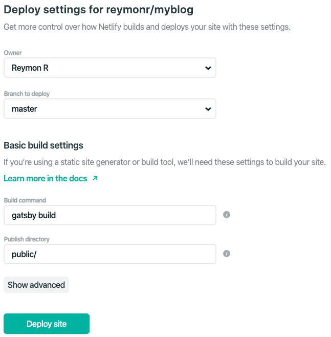
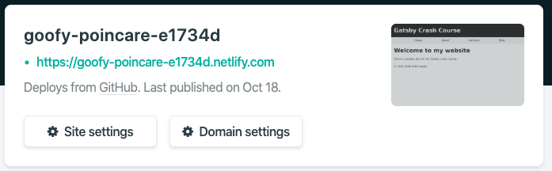